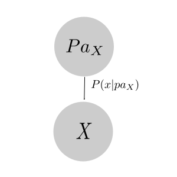
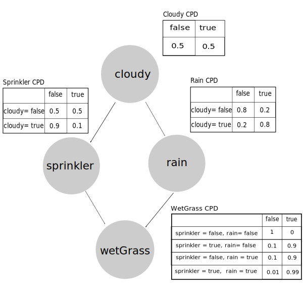

Tabular CPDs
Demonstration for Tabular CPDs
Represent every possible discrete CPDs as a table.

So we have
Advantages
- Easy make inference (natural)
Disadvantages
- Doesn't work with continuous variables
- The number of parameters needed to describe a table-CPD is the number of join assignments to
and
Example
Structure of the sprinkler network

Related Softwares